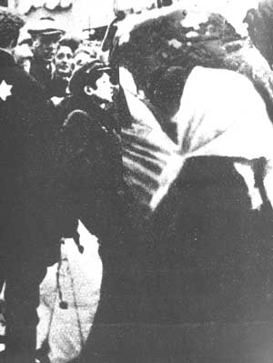
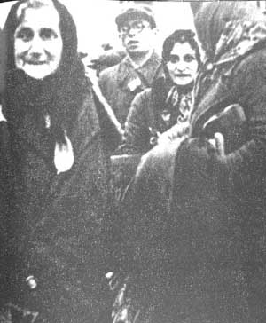

Lost Jewish Worlds |
|||||
|
Home | |
Grodno to WWI | |
Between the Wars . . . 1. Demographic Changes 2. Antisemitism & Pogroms 3. Education & Religion 4. Cultural Life 5. Political Activity |
| Under Soviet Rule | |
German Occupation . . . 1. Fall of the City 2. Deportations to the Ghetto 3. Confiscation & Forced Labor 4. Liquidation of the Ghetto 5. Underground Activities 6. After the War |
| Bibliography |
THE GERMAN OCCUPATION - 2
(Images of the Deportations to the Ghetto)
Please be patient while images load



As we have already indicated, the authorities did not always publish a judicial order before implementing it. A flagrant example of this method was forced labor, which was introduced immediately after the occupation. It was not until two months later, on August 16, 1941, that the relevant official order was published. The Jews had to report every morning near the synagogue, from where they were taken by government bodies, such as the army or the municipality, to work at various types of labor. The general work companies cleared stones from the streets, repaired roads, and cleaned the barracks of the occupying forces. Public works such as clearing snow, paving roads, and cleaning streets were considered to be for the general good and were not recompensed. The order was accompanied by the threat of punishment against those who did not work, but even those who did were beaten, abused and humiliated.
Only those with vital professions, who received work permits, were assured permanent employment and were spared the brutal experience of the mass concentration in the morning and the grueling unskilled labor.
When the Grodno subdistrict was annexed to the Bialystok district (see below), the laws and regulations in effect in the latter were also applied to the former. On October 15, 1941, the first official order was promulgated for the entire district regarding forced labor; it specified the ages of those who were obligated to work – males aged fourteen to sixty and women aged fourteen to fifty-five. A more detailed order from April 1, 1942, was directed to all the district’s Jews, stipulating execution as the punishment for evasion.
On September 29, 1941, Abraham Lifszyc, director of the Judenrat’s commerce and industry department, submitted to the city administration a list of craftsmen and skilled workers for whom he sought work permits. The list mentions an extraordinary range of professions: technicians, locksmiths, brushers, milliners, wood carvers, chimney sweeps, tile layers, road pavers, wagoners, soap makers, pot menders, blacksmiths, sheet-metal workers, barrel builders, furriers, watchmakers, bakers, stove stokers, and many more – all told, 600 professions and crafts.
In theory, the work permits were intended solely for skilled craftsmen, but the Judenrat’s labor department tried to assist the members of the liberal professions as well and was sometimes able to obtain craftsmen’s certificates for them. Jewish permit-holders were supposed to earn 60 percent of the wages of local workers. Of this, 50 percent was deducted for the Municipal Commissar, 12 percent went to social insurance, and the remaining 38 percent was transferred to the Judenrat, which had to supply food. The workers themselves received no wages.
Home